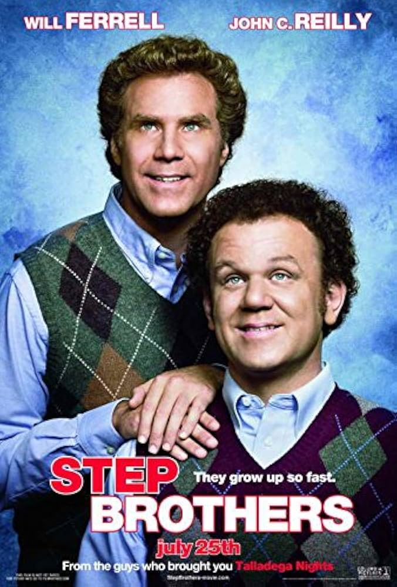
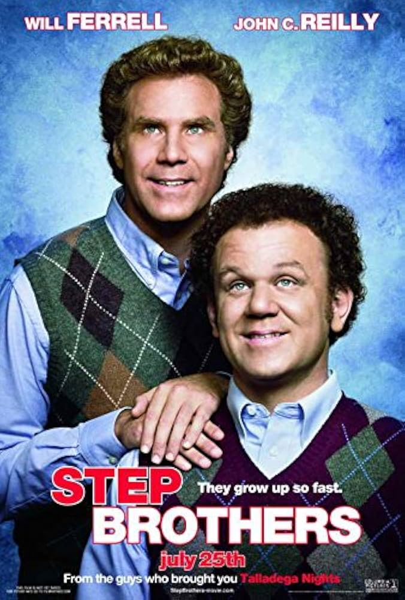

Runtime: 2hr 32min Rating:
THIS IS A SEQUEL
With the help of allies, Lt. Jim Gordon and DA Harvey Dent, Batman is able to keep a tight lid on crime in Gotham City. But when a young criminal calling himself the Joker suddenly throws the town into chaos, the caped crusader begins to tread a fine line between heroism and vigilantism.
Back to TopRuntime: 1hr 38min Rating:
A fairy tale adventure about a beautiful young woman and her one true love. He must find her after a long separation and save her. They must battle the evils of the mythical kingdom of Florin to be reunited with each other. Based on the William Goldman novel "The Princess Bride" which earned its own loyal audience.
Back to TopRuntime: 1hr 56min Rating:
Linguistics professor Louise Banks (Amy Adams) leads an elite team of investigators when gigantic spaceships touch down in 12 locations around the world. As nations teeter on the verge of global war, Banks and her crew must race against time to find a way to communicate with the extraterrestrial visitors. Hoping to unravel the mystery, she takes a chance that could threaten her life and quite possibly all of mankind.
Back to TopRuntime: 1hr 35min Rating:
Brennan Huff (Will Ferrell) and Dale Doback (John C. Reilly) have one thing in common: they are both lazy, unemployed leeches who still live with their parents. When Brennan's mother and Dale's father marry and move in together, it turns the overgrown boys' world upside down. Their insane rivalry and narcissism pull the new family apart, forcing them to work together to reunite their parents.
Back to TopRuntime: 1hr 35min Rating:
Riley (Kaitlyn Dias) is a happy, hockey-loving 11-year-old Midwestern girl, but her world turns upside-down when she and her parents move to San Francisco. Riley's emotions -- led by Joy (Amy Poehler) -- try to guide her through this difficult, life-changing event. However, the stress of the move brings Sadness (Phyllis Smith) to the forefront. When Joy and Sadness are inadvertently swept into the far reaches of Riley's mind, the only emotions left in Headquarters are Anger, Fear and Disgust.
Back to Top